Composers Pathway
Explore five eras through 32 composers. Hover over or tap a highlighted term for a definition and an example. Select an image to enlarge it.
Baroque 1600–1750
Repeating bass lines keep a steady pulse while independent melodies weave together and imitate each other.
-
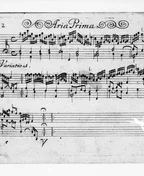
Pachelbel’s Hexachordum Apollinis, 1699 No verified portrait survives. This printed page shows the first aria and its opening variation. Bibliothèque nationale de France. Public domain. Wikimedia Commons -
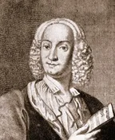
Vivaldi, 1725 François Morellon la Cave. Public domain. Wikimedia Commons -
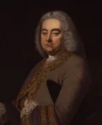
George Frideric Handel, painted by Thomas Hudson Thomas Hudson, National Portrait Gallery. Public domain. Wikimedia Commons -
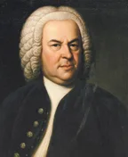
Bach, 1748 Elias Gottlob Haussmann. Public domain. Wikimedia Commons
Classical 1750–1820
Clear melodies sit over simple accompaniments. Phrases often sound like questions and answers, and themes return in recognizable forms.
-
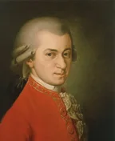
Mozart, painted in 1819 Barbara Krafft. Public domain. Wikimedia Commons -
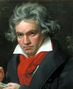
Beethoven, 1820 Joseph Karl Stieler. Public domain. Wikimedia Commons
Romantic 1820–1900
Long melodies, richer harmonies, and bigger shifts in volume heighten emotion. Piano and orchestral pieces often tell stories or paint scenes.
-
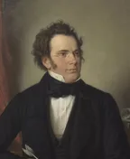
Franz Schubert, painted in 1875 Wilhelm August Rieder painted this likeness from his own 1825 watercolor. Wilhelm August Rieder. Public domain. Wikimedia Commons -
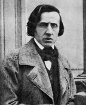
Chopin, c. 1849 Attributed to Louis-Auguste Bisson. Public domain. Wikimedia Commons -
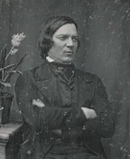
Robert Schumann, 1850 A daguerreotype taken the year Schumann became music director in Düsseldorf. Johann Anton Völlner. Public domain. Wikimedia Commons -
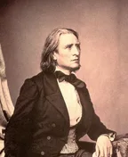
Franz Liszt, 1858 Franz Hanfstaengl. Public domain. Wikimedia Commons -
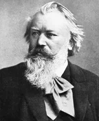
Johannes Brahms, 1889 C. Brasch. Public domain in the United States. Wikimedia Commons -
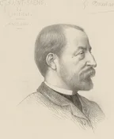
Camille Saint-Saëns, 1884 Gustave Boulanger, engraved by Charles Bellan. Public domain. Wikimedia Commons -
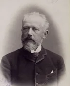
Tchaikovsky in Paris Émile Reutlinger. Public domain. Wikimedia Commons -
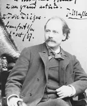
Jules Massenet, 1887 Erwin Hanfstaengl. Public domain. Wikimedia Commons -
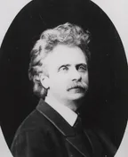
Edvard Grieg, about 1870 Bergen Public Library, Grieg Archives. No known copyright restrictions. Wikimedia Commons -
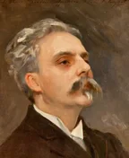
Gabriel Fauré by John Singer Sargent, about 1889 John Singer Sargent. Public domain. Wikimedia Commons -
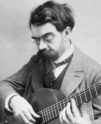
Francisco Tárrega with his guitar Unknown photographer. Public domain. Wikimedia Commons -
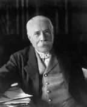
Sir Edward Elgar, 1931 Herbert Lambert. Public domain. Wikimedia Commons -
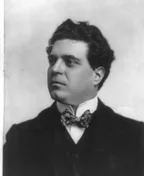
Pietro Mascagni, 1903 Library of Congress. Public domain. Wikimedia Commons -
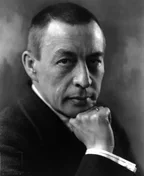
Sergei Rachmaninoff, 1921 Kubey-Rembrandt Studios, Library of Congress. Public domain in the United States. Wikimedia Commons
Modern 1890–1940s
Composers experiment with new scales and harmonies. Repeated rhythms can hold the music together while the sounds around them change.
-
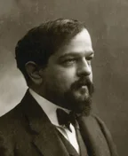
Claude Debussy, c. 1908 Félix Nadar Studio. Public domain. Wikimedia Commons -
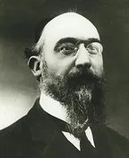
Erik Satie, c. 1914 Studio Hamelle. Public domain. Wikimedia Commons -
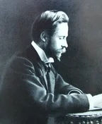
Alexander Scriabin, 1905 Unidentified photographer. Public domain. Wikimedia Commons -
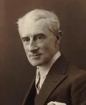
Maurice Ravel, 1925 Unidentified photographer, Bibliothèque nationale de France. Public domain. Wikimedia Commons -
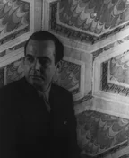
Samuel Barber, 1944 Carl Van Vechten, Library of Congress. Public domain. Wikimedia Commons
American roots & jazz 1890s–1950s
Ragtime sets offbeat accents against a steady pulse. Jazz players shape that beat with swing and make up solos as they play.
-
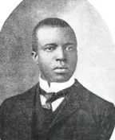
Scott Joplin Unknown photographer. Public domain. Wikimedia Commons -
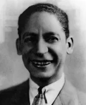
Jelly Roll Morton, about 1927 Bloom studio, Chicago. Public domain. Wikimedia Commons -
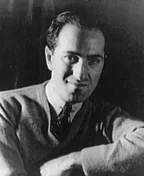
Gershwin, March 28, 1937 Carl Van Vechten, Library of Congress. Public domain. Wikimedia Commons -
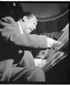
Ellington at the piano, New York, 1946–48 William P. Gottlieb, Library of Congress. Public domain. Wikimedia Commons -
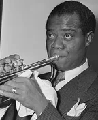
Armstrong and his trumpet, 1938–48 William P. Gottlieb, Library of Congress. Public domain. Wikimedia Commons -
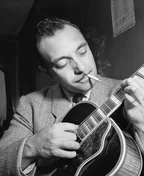
Django Reinhardt at the Aquarium, New York, 1946 William P. Gottlieb, Library of Congress. Public domain. Wikimedia Commons -
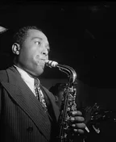
Parker at the Three Deuces, New York, August 1947 William P. Gottlieb, Library of Congress. Public domain. Wikimedia Commons